Like "Mom and apple pie," "the Saturday night bath" is a catch phrase that comes straight out of America's rural past. Until only recently most of our parents and grandparents-like their ancestors before them-went through the weekly ritual of hauling a battered tin tub down from its peg on the back porch for that "once-a-week whether-you-need-it-or-not" scrub.
This event was accompanied by much sloshing of water in galvanized buckets, steaming of kettles and pots on the wood range and oozing of soapsuds all over the kitchen floor, and often Junior wound up with the lukewarm and none-too-clean liquid that was left after all the higher-ups in the family pecking order had done their thing. It's little wonder that America took to the gas- or electric-fired domestic water heater like, well, like ducks to water.
Now, of course, we take that convenience for granted. In fact, today's new homesteader is likely to find that if there's one single thing he really misses about "civilization," it's a hot shower at the end of the day. It might be argued with justice that the American preoccupation with cleanliness is schizophrenic, since-as a people-we seem to be more concerned with clean restrooms than clean air. Even so, when you've been pouring cement, haying or weeding the garden the better part of a July afternoon-it's pure bliss to greet the sunset with a hot bath or shower.
But Reddy Kilowatt, like it or not, is a very messy fellow. The dirt washed down the drain by the bath water from an electric heater probably doesn't equal the amount of dirt spewed into the air in order to produce that heat. And every cubic inch of gas burned in the only other commonly available water heater is one cubic inch of gas the world will never use again. In any case, many homesteaders live so far from both gas and electric lines that their choice boils down to either [1] going the Saturday night bath route or [2] going dirty.
Still-as we've found on our place-there are other solutions. For almost three years we hassled with the tin tub and, while the ritual at first seemed a mildly adventurous experience out of an earlier and less hectic era, it soon became very old stuff indeed. (Particularly during the winter, when baths were confined to that portion of the living room floor immediately in front of the Ashley heater.) We soon found ourselves taking advantage of our infrequent trips to town by bathing at the homes of friends, until they began to wonder whether we came to visit them or to steam up their bathrooms. Finally we decided that a rural organic life didn't have to include feeling grubby most of the time, and the fabrication of a bathhouse became our top priority project.
Construction materials for our new luxury were no problem. We live on the edge of a national forest where, every year, crews with chain saws thin out the smaller trees so that the remaining timber can grow to a marketable size. These thinnings are left where they fall to eventually rot back into the forest floor. They're free for the taking, and, if gathered while still green, make fine log-cabin-type buildings. An axe, a chain saw and a copy of Bradford Angier's book How To Build Your Home In the Woods were all I needed to put up a 10' x 12' bathhouse.
Flagstones for the building's floor were gathered in a nearby quarry, and a friend who was remodeling his old house donated a 1940-vintage bathtub to the cause. All we lacked was the water heater. Since (for all the obvious reasons) gas or electric devices were out of the question, our choice was between a solar collector or a wood-burning unit. Back then, in the summer of 1972, 1 didn't know enough about the former method to feel very confident of the results, and felt that a wood-burner looked like the most practical solution.
At that point I thought back many years to when I'd lived in Mexico for a short time and my rented house had contained a commercially made wood-burning water heater. Was that unit a rare old relic of Mexico's past, I wondered, or was the same thing still available? I passed on my question to a friend who was making a brief trip south of the border, and, sure enough, within a few weeks he drove up with an honest-to-gosh, wood-fired hot water heater lashed to the top of his VW microbus.
On a subsequent trip to Mexico, I found that such devices are for sale in just about every hardware store for the equivalent of around $20.00. My own model is a Calentador Corona, Modelo L.R. 47 made by Calentadores Corona, S.A., Murillo 49, Mixcoac, D.F. Mexico. We find it an excellent product: Four or five small sticks of wood in its firebox will heat 30 gallons of water to near boiling in fifteen minutes.
At present the water supply for our Corona is a 55-gallon drum (Fig. 1) mounted on the roof of our root cellar (to which the bathhouse is attached). The stored liquid flows down to the heater through plastic pipe, which is available in most hardware and building supply stores, and ridiculously simple to assemble. When we eventually get our wind pump and tank erected, however, water will be piped directly to the bathhouse, eliminating the need for the overhead tank. (How soon we're corrupted by soft living! Already we find it an odious task to haul water and fill the barrel.)
Not everyone is fortunate enough to live within 400 miles of the Mexican border, of course, so a water heater like ours may be difficult for some homesteaders to procure. Still, that doesn't mean you're doomed to the old tin tub.
Many years ago (I'm not certain when they stopped being manufactured) laundry stoves were standard items in American homes, and some of these old-timers are still around. Such a gadget has a water jacket, which surrounds the firebox, and is fitted with a cold-water inlet at the bottom of the casing and a hot-water outlet at the top. It works very simply: As the water is heated inside the jacket, it moves upward by convection through the hot-water outlet to a holding tank (Fig. 4 and Dwg. 1). Cold liquid from the bottom of the tank then replaces the warmed contents of the jacket. This process continues until the whole tankful is hot.
We have one of these laundry stoves on our back porch, and use it for heating dishwater. It does take about an hour for the unit to do a thorough job on the contents of our 20-gallon holding tank, though. Obviously, the Mexican water heater is much more efficient and we plan to replace the laundry stove on our next trip south of the border.
Still, the old-time devices do work, and you can usually turn one up in secondhand and antique stores for about $40.00, just remember to look for the two pipes coming out the back of the stove, the detail which distinguishes the laundry heater from other small units of almost identical design. And examine your find carefully before you buy it, because such stoves may have cracks in their jackets (usually caused by leaving them exposed to freezing temperatures with water still inside). The breaks can sometimes be brazed shut (cast iron usually can't be welded) but it's still a risky proposition.
You can also construct your own wood-burning water heater quite easily by recycling a conventional gas-fired unit found in any city dump. As often as not, an old heater is thrown away because the gas burner is broken, not necessarily because the tank is defective. Once you've determined that the container doesn't leak, it's a simple matter to remove the gas-burning apparatus and weld a short extension on the bottom of the tank to provide a firebox (Fig. 3 and Dwg. 2). Some models even have enough space at the lower end to make such an addition unnecessary.
The original vent pipe (which runs up through the middle of a gas water heater's tank) serves admirably as a chimney. Add a few lengths of stovepipe at the top to provide a stack, and you have a very serviceable, low-cost, wood-fired water warmer of the same type as my Mexican import.
Another homemade wood-burning design, which makes use of the same principle as the old laundry stoves, can easily be constructed out of a 55-gallon drum. The barrel is used as a firebox and heats the water in a coil of copper tubing which fits inside. The making of such a device is described on page 75 of Mother Earth News, No. 22 and on page 26 of a very valuable book entitled Making Do: Basic Things for Simple Living by Arthur M. Hill (Ballantine Books, New York, 1972).
Back in 1972, as I've said, we opted for wood to warm our bath water mostly because I didn't know enough about solar heating to be convinced that it would work well. Now I'm somewhat better informed, enough to assure you that the sun can and does do the job effectively.
Solar water heaters have been in use for a long time in other countries-notably Japan and Israel-and were fairly popular in Florida and California during the 20's and 30's. There are several basic designs, all of them easy to build. What amazes folks who have never seen these gadgets before is that they really do work!
One solar water heater design, invented by Peter van Dresser (see the interview in Lifestyle! No. 7), makes use of two pieces of corrugated iron roofing. The sections are placed face to face so that each corrugation combines with its opposite to make a "pipe" for the water to flow through (Dwg. 6). The sides of the unit are welded or brazed together and the "troughs" between the corrugations are joined by rivets, spot welds or bolts at intervals of approximately eight inches. (Great care must be taken to make those fastenings leakproof, a difficulty with this design because water pressure tends to force leaks at the rivet points.)
At the top and bottom of this heat collection unit, pieces of galvanized or aluminum roof-peak flashing, bent to fit, are brazed to provide for the intake and outlet of water. One end of each flashing tube is connected to a pipe, and the other is folded over and brazed watertight. The entire collector is painted black and positioned to face south to absorb the sun's heat . A piece of glass (not plastic) is placed over the device to help retain warmth.
The principle of this solar water heater, and of most others, is the same: Cold water enters at the bottom from a storage tank placed above the collecting unit. As the sun warms the surface of the metal, heat is transferred to the water inside. The warm liquid moves upward by convection and eventually displaces the colder contents of the reservoir. This process continues until the whole tank of fluid is heated and ready to use.
Another design which works just as well, is less leak-prone and has the added bonus of being freezeproof is used in Steve Baer's solar-heated home in New Mexico (see Mother Earth News, No. 22). This sun-powered water warmer makes use of copper pipes: two verticals and as many horizontals as desired, depending on how large a collector you're building (Dwg. 4). A thin copper strip is brazed to the back of each horizontal element to give more heating surface, and the entire unit is painted black for the same reason.
As the diagram shows, this design is unique in that an antifreeze solution (instead of water) circulates through the collector panel. This chemical (the same kind you use in your automobile's radiator) heats and moves upward by convection to enter an insulated jacket surrounding the water tank proper. Heat is then transferred to the water as the antifreeze continues to circulate. Baer's model makes solar-heated water possible even in frigid weather, that is, as long as the sun is shining!
As simple and relatively inexpensive to build as these solar devices are, it's probably cheaper to purchase a ready-made collector panel. On page 98 of the June 1973 issue of Popular Science is an article entitled "Black 'Mattress' That Puts Btu's in Your Pool." This feature describes a plastic solar collector designed to heat swimming pools, and mentions that the invention can be used to provide a hot water supply for cabins and vacation homes. The unit, called a Solarator, is available for $18.75 from (are you ready for this?) Fun and Frolic, Madison Heights, Michigan 48071. I recently purchased one of these devices, and, although I haven't yet installed it, it seems to be a quality product that should serve me well for several years.
So you see, with all these possibilities for bringing hot water to your homestead, the old Saturday night bath needn't be a vaguely unpleasant ritual conducted next to the kitchen stove, it can be almost a rite of purification. At least that's the way I feel when I'm lying back in a steaming tub of water in my bathhouse on a crisp autumn night, savoring the glow of the kerosene lamps against the log walls and listening to the wind outside tell me winter is on its way. It is good-it is very, very good!
|
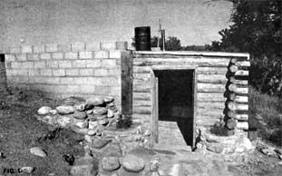 The DeKorne combination root cellar and bathhouse under construction. The 55-gallon drum on the roof of the bathing facility is connected via plastic pipe to a water heater inside. Jim says that the system's pressure is quite sufficient for the satisfactory operation of a shower. Eventually, the root cellar portion of this structure will be banked with dirt. The still-under-construction stone wall in the photo will hold that earth in place. |
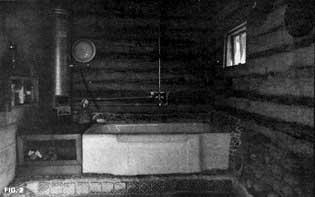 Bathhouse interior. The "chips" set in the plaster around the tub are potsherds found at a nearby Pueblo Indian ruin. Mexican tiles cover the area below the tub and woodbox. |
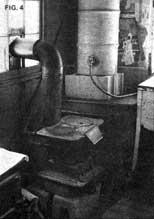 Wood-burning laundry stove. Note inlet and outlet at rear if water jacket. The holding tank behind the heater will store about 20 gallons of warmed liquid and, even though the drum is uninsulated, the water it contains will remain hot all day from a single firing. This particular installation is temporary and will soon be replaced. |
|
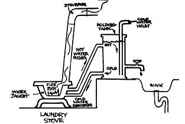 This schematic shows the inner workings of the laundry stove water heater described in this article. Note both the placement of the holding tank in relation to the stove and the circulation of the water. |
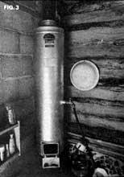 Mexican-made wood-burning water heater. The faucet was added by the DeKornes. |
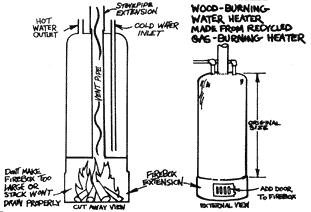 Schematic of homemade wood-burning heater. Note that cold water is piped into bottom of unit and hot out from top. |
|
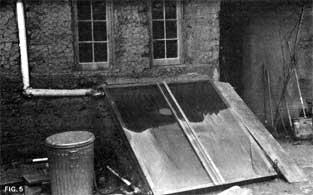 This solar water heater was designed by Peter van Dresser, a alternative energy enthusiast who moved to New Mexico and began experimenting with solar heated houses and windmills in 1949 (long before the current revival of interest in renewable energy resources). Mr. Mr. van Dresser, a fascinating individual in his own right, is credited by James B. DeKorne, Steve Baer and other southwestern alternative energy movers and shakers as being a major source of inspiration and encouragement. For photos of solar heated houses built by van Dresser as long ago as 1949, a projection of today's energy crisis that he wrote in 1938 and other facts about the man, see the James B. DeKorne interview with Peter van Dresser in Lifestyle! No. 7. |
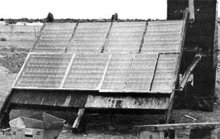 This solar water heater is currently in everyday operation at a New Mexico commune. The copper tubing visible through the glass is brazed into the zig-zag pattern you see. The corrugated roofing behind the tubing is painted black (to help collect heat) and insulation-in turn-behind the roofing makes the unit more efficient. Note also the insulation (which is nothing but a wooden box filled with sawdust) around the storage tank on this homemade setup and around the water heater's connecting pipes. Holding tanks, particularly if they're outdoors and exposed to chilling winds, should always be protected this way. It's foolish to collect the sun's warmth and then just dissipate it to the atmosphere. |
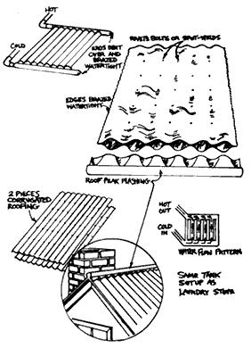 Many folks seem to think about making solar collectors from two sheets of corrugated roofing, but few seem to succeed. Riveting, bolting, spot welding and brazing the pieces of metal together so that all joints are watertight isn't quite as easy as it might look. If you do want to try your hand at this kind of sun-powered water heater, the diagram shows how to go about it. |
|
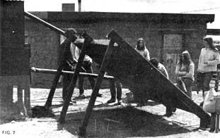 This side view of the solar collector now in operation on a New Mexico commune shows some of the construction details of the unit's underpinnings. As you can see, there's nothing at all complicated about the piece of hardware, which illustrates one of the most exciting aspects of today's move to harness the sun: Everyone can get in on the act. Complicated labs and expensive equipment are all very nice, but for point-of-use, practical applications of solar energy, it's still hard to beat a freak with some old window panes, salvaged sheets of roofing, some 2 X 4's scrounged pipe and a can of black paint. |
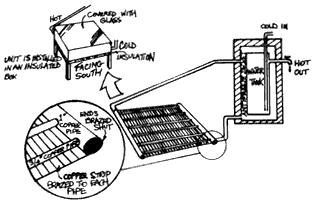 Schematic of Steve Baer's all-season water heater in which an anti-freeze-treated fluid is first warmed and then used to heat water for washing, bathing and other purposes. This setup is a little more complicated to construct but not really any more difficult to understand, and it works in fair weather or foul. |
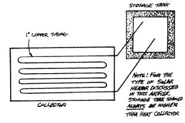 Simple schematic showing, again, that the rule of thumb for most solar water heaters is locate the holding tank above the collector. |